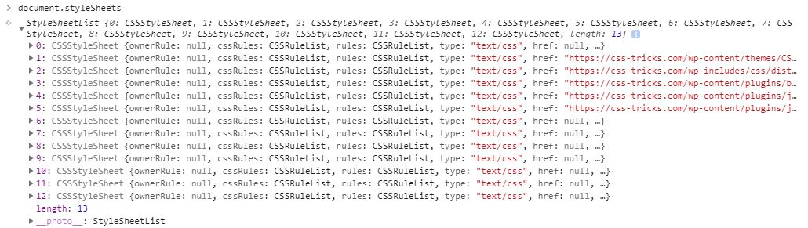
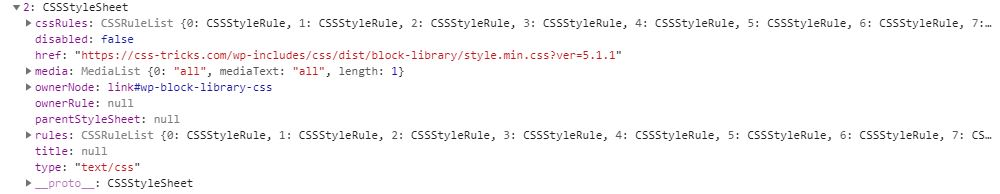

Веб программирование. Фронтенд
CSSOM
Содержание лекции
CSSOM
Да, есть такое названиеCSSOM
До этого момента мы рассматривали DOM API, - набор функций, который позволяет программно взаимодействовать с HTML документом.
Мы не касались стилей, даже когда работали с классами. CSS классы уже были созданы заранее, а мы лишь подключали/отключали их от HTML элементов. Т.е. просто работали с атрибутом class, а атрибуты это часть DOM.
CSSOM же позволяет изменять именно стили.
CSSOM
CSS Object Model (CSSOM) - это API, набор функций и объектов, которые позволяют взаимодействовать с CSS через JavaScript.
Это то же, что и DOM, только для CSS, а не для HTML.
С помощью CSSOM можно получать и динамически изменять стили, программно создавать наборы стилей и CSS классы.
Встроенные стили
Самый главный и удобный способ взаимодействия с CSS свойствами - через свойство style, которое есть у всех HTML элементов (объект HTMLElement).
Например:
document.body.style.background = "lightblue";
let div = document.getElementsByTagName("div");
console.log(div.style.height);
Свойство style
Через это JS свойство можно получать значение и изменять любое CSS свойство, у любого элемента на странице.
Вот по такому формату:
element.style.propertyName
Объект style
Свойство style содержит в себе объект CSSStyleDeclaration (или CSS2Properties, в зависимости от браузера).
Это просто объект, в котором есть ключи для большинства свойств, существующих в CSS.
Если заглянуть в него, то можно будет увидеть этот огромный перечень свойств.
Правила наименования
Имена многих свойств записаны в объекте style так же, как и в CSS.
Но в некоторых именах в CSS встречаются знаки тире "-", а в JS этот символ нельзя использовать для названий переменных, поэтому при переносе свойств в JS знаки тире пропадают, и вместо них следующая буква прописывается заглавной.
Трансляция имён происходит по такому принципу:
| CSS | JS |
|---|---|
| background-color | backgroundColor |
| border-radius | borderRadius |
| box-sizing | boxSizing |
| grid-row-gap | grdidRowGap |
| min-width | minWidth |
Альтернативная запись
Также к отдельным свойствам внутри объекта style можно обращаться и через нотацию квадратных скобок.
let div1 = document.getElementById("test_div");
div1.style["width"] = "256px";
Причём в это случае можно использовать не транслированные имена без знаков тире, а оригинальные названия свойств из CSS:
div1.style["background-color"] = "#123456";
div1.style["margin-top"] = "2vw";
div1.style["text-align"] = "center";
Пример с inline стилями
See the Pen Using the style property to change the background color by Pavel (@ParadoxMaster) on CodePen.
Анимация движения
Есть 2 способа создания для элемента анимации движения по странице.
- На чистом CSS
- И при помощи JS
CSS используется для более простой анимации, когда траекторию перемещения можно описать несколькими точками и она не меняется по ходу работы программы. Простая интерактивная анимация создаётся через CSS свойство transition, более сложная и автоматическая - через свойство animation и ключевые кадры.
Через JS анимацию нужно делать только тогда, когда траектория движения элементов на странице сложна, непредсказуема, или очень сильно варьируется в зависимости от действий пользователя.
Позиционирование
Любая анимация реализуется через изменение CSS свойств элемента. Но в CSS нет такого понятия, как координаты элемента. Но зато есть свойства для задания относительного положения на странице - top, right, bottom и left. Именно они используются в роли координат элемента.
Но эти CSS свойства доступны только для жестко позиционированных элементов. Поэтому для элементов, движение которых нужно анимировать, обычно используется абсолютная или фиксированная позиция.
Анимация через CSS
See the Pen CSS Animation by Transition by Pavel (@ParadoxMaster) on CodePen.
Анимация через JS
See the Pen JS Animation by Pavel (@ParadoxMaster) on CodePen.
Объект CSSStyleDeclaration
Свойство style хранит объект CSSStyleDeclaration.
Этот объект будет встречаться не только в этом свойстве, но и в нескольких других местах далее - везде, где нужно хранить полный перечень CSS свойств элемента.
В нём есть парочка дополнительных методов:
- setProperty() - установка значения CSS свойства
- getPropertyPriority() - получение приоритета свойства
- removeProperty() - удаление значения CSS свойства
И свойство cssText - строка, которая хранится в атрибуте style элемента.
Метод setProperty
Метод setProperty() является функциональной альтернативой для задания значения CSS свойству.
Он принимает 2 обязательных строковых аргумента: название свойства и значение.
style.setProperty("property-name", "value");
Например, вот так:
let span = document.getElementById("my_id");
span.style.setProperty("height", "300px");
span.style.setProperty("line-height", "300px");
Работа с приоритетом
С помощью третьего дополнительного параметра метода setProperty можно установить приоритетность свойства:
Допускается 2 варианта значения: "important" и "".
// Устанавливает повышенный приоритет свойства
span.style.setProperty("width", "10%", "important");
// Устанавливает обычный приоритет
span.style.setProperty("margin","5px 8px", "");
Это единственный способ работы с приоритетом CSS свойств из JS. Через короткую форму записи назначение свойства с приоритетом работать не будет:
span.style.caretColor = "white !important"; // Ноль результата
Метод getPropertyPriority
Метод getPropertyPriority() даёт возможность проверить приоритет конкретного CSS свойства.
let priority = style.getPropertyPriority("property-name");
Единственным параметром принимает имя проверяемого свойства, возвращает пустую строку или строку "important".
let img = document.images[0];
let prior = img.style.getPropertyPriority("scrollBehavior");
if (prior === "important") {
console.log("scrollBehavior is set to important!");
}
Метод removeProperty
Метод removeProperty() позволяет сбросить (обнулить) значение указанного CSS свойства.
let oldValue = style.removeProperty("property-name");
Параметром передаётся название обнуляемого свойства, возвращаемым значением приходит значение, которое было в свойстве перед обнулением.
let p = document.querySelector("p");
p.style.setProperty("border-radius", "2px", "important");
console.log(p.style.borderRadius); // "2px"
console.log(p.style.getPropertyPriority("border-radius")); // "important"
let old = p.style.removeProperty("border-radius"); // old = "2px"
console.log(p.style.borderRadius); // ""
console.log(p.style.getPropertyPriority("border-radius")); // ""
Свойство cssText
В свойстве cssText хранится строка, представляющая собой встроенный стиль элемента. Иначе говоря, это то же, что и значение атрибута style.
Если в HTML:
<span class="sent" style="heigth: 20px; margin: 5px 2px; color: black">Sentence - Предложение</span>
То в свойстве cssText у стиля этого элемента будет:
let sentSpan = document.querySelector("span.sent");
let inlineStyles = sentSpan.style.cssText;
console.log(inlineStyles); // "heigth: 20px; margin: 5px 2px; color: black"
if (inlineStyles != "") {
console.log("Element has inline styles");
}
Inline стили
Свойство style - очень мощный инструмент, с помощью него можно создавать настоящую динамику и сложную анимацию на странице.
Но у этого свойства есть одна проблема: оно работает чисто со встроенными (inline) стилями.
Inline стилями называются стили, которые прописаны прямо внутри HTML элемента.
В документе это выглядит вот так:
<span class="algolia-autocomplete" style="position: relative; display: inline-block; direction: ltr;"></span>
Проблема
Если задать значение inline свойству, и затем прочитать его, всё будет нормально:
// HTML: <body>
document.body.style.backgroundColor = "rgb(100, 100, 100)";
// Теперь HTML: <body style="background-color: rgb(100, 100, 100)">
console.log(document.body.style.backgroundColor);
// Выведет "rgb(100, 100, 100)"
А что если свойство заднего фона будет задано стилями, например, через класс?
// CSS: .ct { backgroundColor: darkblue; }
// HTML: <body class="ct">
console.log(document.body.style.backgroundColor);
// Выведет ""
Ограничения
Свойство style очень удобное и незаменимое.
Но оно обладает весьма серьёзными ограничениями.
Это свойство работает только с inline стилями, и никак не контактирует со всеми остальными формами задания CSS свойств.
Этим свойством style удобно пользоваться, когда нужно изменить стиль.
А вот с целью получения текущих значений CSS свойств, оно поможет слабо. Для этого нужен другой подход.
Вычисленные свойства
CSSOM предоставляет глобальную функцию getComputedStyle(), находящуюся прямо в window(не знаю, что она там забыла).
И эта функция позволяет получить полную таблицу вычисленных на текущий момент времени свойств для любого элемента HTML страницы.
Через эту функцию нельзя изменять значения свойств элемента, можно только получать.
getComputedStyle
Эта функция, getComputedStyle(), принимает в качестве параметра объект элемента, чьи CSS свойства нужно получить, и возвращает такой же объект, какой содержится в свойстве style, т.е. объект с ключами для всех CSS свойств, только readonly и с вычисленными значениями.
let computed = getComputedStyle(element);
let div = document.getElementsByTagName("div");
let compForDiv = getComputedStyle(div);
Вычисленные значения
Их также можно видеть в Инструментах Разработчика на специальной панели:

Вычисленные значения
Вычисленные значения свойств отражают состояние стиля отображения элемента на момент их получения. Если значение CSS свойства задаётся формулой или относительным выражением, то здесь будет выдано уже рассчитанное значение, а не сама формула.
Примеры функционирования
Если у нас есть div, у которого с помощью CSS класса задан цвет фона background-color: rgb(10, 16, 242).
Тогда в вычисленных значениях для элемента можно будет получить это значение:
let div = document.getElementById("main");
let cmp = getComputedStyle(div);
console.log(cmp.backgroundColor); // "rgb(10, 16, 242)"
// Ошибка - нельзя изменять вычисленные свойства
cmp.backgroundColor = "rgb(111, 147, 80)";
Особенности вычисленных значений
А теперь представим, что свойство background-color для нашего div-а прописано следующим образом: background-color: blue.
Но в getComputedStyle() оно будет выглядить уже не так, как было прописано в CSS:
let div = document.getElementById("main");
let cmp = getComputedStyle(div);
console.log(cmp.backgroundColor); // "rgb(0, 0, 255)"
// blue -> rgb(0, 0, 255)
И так будет для всех остальных форм записи цвета - вернётся значение в формате rgb/rgba.
Вычисленные размеры
Это может стать проблемой при получении размеров:
Допустим, в CSS для элемента задана ширина как width: 60%.
let div = document.getElementById("main");
let cmp = getComputedStyle(div);
console.log(cmp.width); // 782px
// 60% -> 782px
Любые размеры будут показаны в пикселях. Вне зависимости от их формы записи в оригинальном CSS. Высота, ширина, внутренние/внешние отступы, смещение, граница - все свойства, в которых фигурируют размеры, будут рассчитаны в пикселях.
Значения по умолчанию
А теперь попробуем заглянуть в свойство backgroundColor без задания цвета в CSS, т.е. когда в CSS просто не прописан задний фон для элемента.
let div = document.getElementById("main");
let cmp = getComputedStyle(div);
console.log(cmp.backgroundColor); // rgba(0, 0, 0, 0)
// ничего -> rgba(0, 0, 0, 0)
Откуда взялось это значение? Это значение по умолчанию.
В объекте, который возвращает функция getComputedStyle(), все свойства проинициализированы и имеют какое-то значение. Если свойство не было прописано в CSS, то для него используется значение по умолчанию.
Суть вычисленных свойств
Вычисленные свойства не отражают все CSS свойства и наборы стилей, привязанные к элементу. Они показывают, чему равны значения CSS свойств элемента на текущий момент.
Например, если к элементу применяется несколько наборов стилей с перекрывающимися свойствами, с помощью getComputedStyle() нельзя узнать о тех свойствах, которые были подавлены более приоритетными селекторами.
Стили псевдоэлементов
С помощью функции getComputedStyle() также можно получать вычисленные значения свойств псевдоэлементов.
Для этого в функцию нужно передать второй параметр - строку с типом псевдоэлемента.
let computed = getComputedStyle(element, pseudoType);
let cmp1 = getComputedStyle(div, "::before");
let cmp2 = getComputedStyle(div, "::placeholder");
let cmp3 = getComputedStyle(div, "::selection");
let cmp4 = getComputedStyle(div, "::first-letter");
И это, к слову, единственный в JS способ получения значений для псевдоэлементов.
Пример с псевдоэлементами
.box::before {
content: "Example";
display: block;
background-color: rgb(13, 239, 120);
width: 50px;
}
.box::placeholder {
content: "Please, enter your name";
display: block;
color: #A2A2A2;
margin-left: 30px;
}
let box = document.querySelector(".box");
let beforeStyle = window.getComputedStyle(box, "::before");
console.log(beforeStyle.width);
// 50px
let placeholderStyle = window.getComputedStyle(box, "::placeholder");
console.log(placeholderStyle.content);
// "Please, enter your name"
Таблицы стилей CSS
CSSOM даёт возможности программно работать не только с CSS свойствами конкретных HTML элементов, но и предоставляет функционал для чтения и записи в любые таблицы/наборы стилей.
Под таблицами стилей (Stylesheets) подразумеваются CSS файлы с набором прописанных стилей с селекторами, а также встроенные в HTML теги style.
Список таблиц стилей
Самый простой способ программного доступа к таблицам стилей - через свойство document.styleSheets.
Свойство document.styleSheets содержит массив (не стандартный Array) из всех подключенных к текущему документу наборов стилей.
Каждый отдельный CSS файл, подключенный тегом link, считается набором стилей.
Каждый тег style внутри HTML документа также считается самостоятельным набором стилей.
document.styleSheets
Этот объект имеет стандартное свойство length, а к отдельным его элементам можно обращаться по индексу.
document.styleSheets
Например:
console.log("Количество таблиц стилей подключенных к документу:");
console.log(document.styleSheets.length);
console.log("Список таблиц стилей:");
for (let i = 0; i < document.styleSheets.length; ++i) {
console.log(`${i}-ая таблица стилей:`);
console.log(document.styleSheets[i]);
}
Список таблиц стилей
console.log(document.styleSheets);
На выводе это может выглядеть как-нибудь так:
Объект CSSStyleSheet
Элементы этого массива являются объектами CSSStyleSheet, каждый из которых выглядит следующим образом:
console.log(document.styleSheets[2]);

Свойства CSSStyleSheet
Основные свойства, которые содержит объект CSSStyleSheet:
- disabled - отключена ли таблица стилей
- href - адрес CSS файла, если он есть
- media - список медиа, для которых будет применяться набор стилей (атрибут media в link)
- ownerNode - HTML элемент, через который таблица стилей подключена
- title - подпись для таблицы стилей (атрибут title в link)
- cssRules/rules - перечисление всех CSS правил
Все свойства, кроме disabled и cssRules, являются readonly, только для чтения.
Пример со свойством disabled
Ниже представлена функция, с помощью которой можно включать/выключать любые таблицы стилей на странице:
function cssEditor() {
let panel = document.createElement("div");
panel.innerHTML = ``;
document.body.appendChild(panel);
panel = panel.firstElementChild;
function appendItem(stylesheet) {
let newItem = document.createElement("div");
newItem.style.background = "white";
newItem.style.margin = "3px 6px";
newItem.style.width = "calc(100% - 12px)";
newItem.style.height = "20px";
newItem.style.cursor = "pointer";
newItem.style.display = "flex";
newItem.style.flexFlow = "row nowrap";
let indicator = document.createElement("span");
indicator.style.width = "20px";
indicator.style.height = "20px";
indicator.style.marginRight = "30px";
indicator.style.borderRadius = "50%";
indicator.style.border = "1px solid black";
newItem.appendChild(indicator);
let text = document.createElement("span");
text.style.height = "20px";
text.style.lineHeight = "20px";
text.innerHTML = stylesheet.href != null ? stylesheet.href : "inline";
newItem.appendChild(text);
panel.appendChild(newItem);
let updateColorStatus = function() {
if (stylesheet.disabled) {
indicator.style.background = "red";
} else {
indicator.style.background = "green";
}
}
updateColorStatus();
newItem.addEventListener("click", function() {
stylesheet.disabled = !stylesheet.disabled;
updateColorStatus();
});
}
for (let i = 0; i < document.styleSheets.length; ++i) {
appendItem(document.styleSheets[i]);
}
}
cssEditor();
Свойство cssRules
Но самое интересное в объекте CSSStyleSheet - это свойство cssRules
Свойство cssRules хранит в себе перечисление всех CSS правил, описанных в соответствующей таблице стилей, включая обычные блоки с селекторами, @-блоки, медиа-выражения, блоки кадров анимации и т.д. - всё, что бывает в CSS файлах.
Пример работы с cssRules
Например, вот здесь выводятся все CSS селекторы, которые встречаются в документе:
See the Pen Work with CSSStyleSheet – Logging selectors by Pavel (@ParadoxMaster) on CodePen.